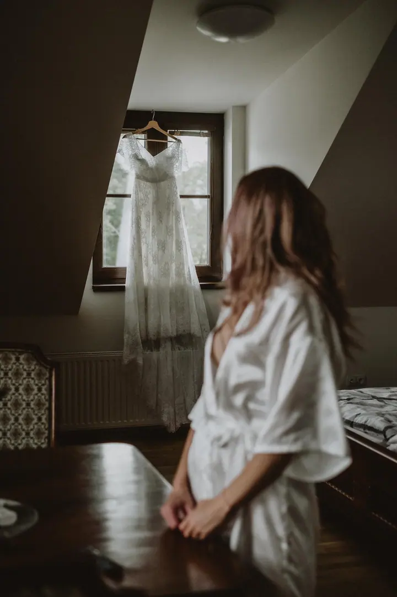
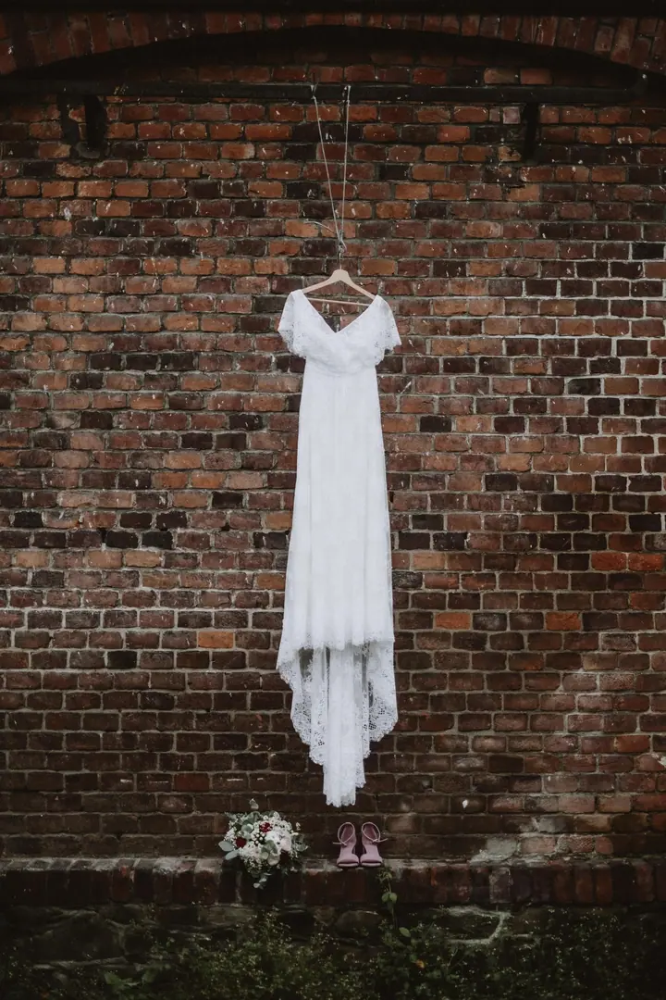
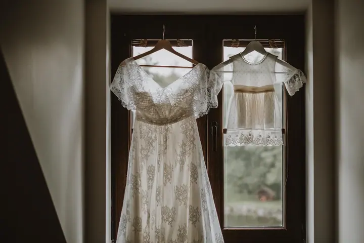

Svatební focení
Fotím celý váš den nebo jen jeho část, od příprav přes obřad a hostinu až po začátek večerní zábavy. Fotky z celého dne vám předám jako upravenou kolekci a k tomu dostanete i tištěné fotografie.

Jmenuji se Lucie Michalčíková a fotím svatby i chvíle z rodinného života. Zázemí mám ve Frýdku-Místku, ale za svatebními páry jezdím po celé republice.
Rezervovat termínFocení je moje radost. Svatební fotografii se věnuji už přes sedm let, takže vím, jak se naladit na atmosféru vašeho dne a vcítit se do toho, co právě prožíváte. Spolehnout se na mě můžete i v tom, že zachovám klid a v každé situaci najdu řešení.


Chci, abyste si focení užili bez zbytečného stresu. Proto nejraději fotím venku nebo u vás doma, pokud to podmínky dovolí. Ať jde o svatbu, rodinné focení nebo vánoční focení s babičkou, každé nové setkání mě baví.
Moc mi záleží na tom, abyste měli své vzpomínky i v podobě, kterou můžete vzít do ruky. Proto ke každému focení patří i vytištěné fotografie.
Co fotím
Fotím celý váš den nebo jen jeho část, od příprav přes obřad a hostinu až po začátek večerní zábavy. Fotky z celého dne vám předám jako upravenou kolekci a k tomu dostanete i tištěné fotografie.
Fotíme asi hodinu, venku v přírodě nebo u vás doma. Chci zachytit opravdové chvíle, ve kterých se budete cítit dobře a uvolněně.
Místo i čas spolu vybereme podle ročního období, počasí a světla. Ráda vám také poradím s oblečením, aby ladilo s celkovou atmosférou.
Postup
Ozvěte se mi přes formulář nebo na telefon a domluvíme se, jestli máte termín volný.
Předem spolu probereme všechno podrobně, vaše představy, místo i čas. U rodinného focení vám ráda poradím s oblečením.
Vy se soustředíte jen na sebe a já se postarám o ostatní. Fotím klidně a nenápadně, abyste se cítili uvolněně.
Upravené fotografie ze svatby dostanete na USB flash disku nejpozději do 5 až 7 týdnů, k tomu i tištěné fotky 13×19 cm.
Otázky
Balíček na rok 2026 stojí 22 000 Kč a zahrnuje 10 hodin focení, 400 až 600 upravených fotografií na USB flash disku a 30 tištěných fotek 13×19 cm. Každá další hodina navíc stojí 1 000 Kč, dopravu účtuji podle vzdálenosti.
Fotíme přibližně hodinu a cena je 4 000 Kč. Dostanete minimálně 50 upravených fotografií v elektronické podobě a 15 vybraných fotek vytištěných ve formátu 13×19 cm.
Zázemí mám ve Frýdku-Místku. Rodinná focení dělám v Ostravě, Frýdku-Místku a okolí, po domluvě ráda vyrazím i dál. Svatby fotím po celé České republice.
Nejraději fotím venku v přírodě nebo u vás doma, pokud to prostor dovolí. Místo i čas vybereme společně podle ročního období, počasí a světla.